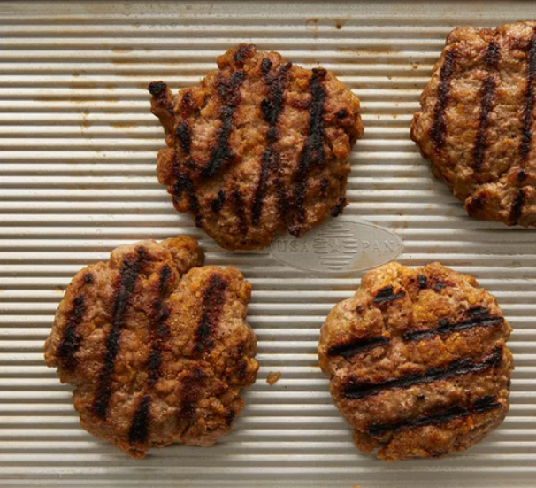

Beef Burger Recipe

These burger patties are made with ground beef and an easy bread crumb mixture.
Nothing beats a simple hamburger on a warm summer evening.
Nothing says summer quite like a juicy grilled burger. You'll find the full recipe below with step-by-step instructions.
Ingredients
- 1 Large Egg
- 1/2 Teaspoon Salt
- 1/2 Teaspoon Ground Black Pepper
- 1 Pound Ground Beef
- 1/2 Cup Fine Dry Bread Crumbs.
Steps
- Preheat outdoor grill for high heat and lightly oil grate.
- Whisk together egg, salt, and pepper in a medium bowl.
- Add ground beef and bread crumbs and mix with your hands or fork until well blended.
- Form into 3/4 inch-thick patties.
- Place patties on grill. Cook 6 to 8 minutes per side. Instant Thermometer should read at least 160 degrees F.